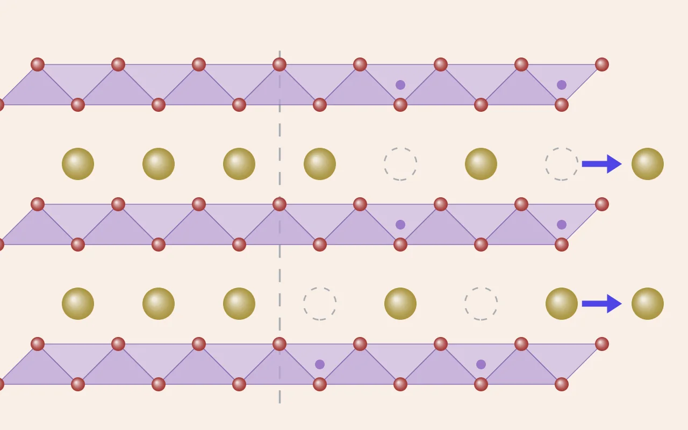

DFT 실습 [9] — 볼록 껍질이 세 번 뒤집히기까지: α-NaMnO₂ 전압 계산 총정리
실습 [1]에서 계산기를 처음 켠 지 한 달 남짓, α-NaMnO₂ 한 물질의 전압을 믿을 수 있는 수준까지 끌어올리는 과정이 일단락됐습니다. 마지막 고비는 중간 조성 Na₀.₇₅MnO₂가 존재하느냐는 질문이었는데, 샘플링 범위를 넓힐 때마다 답이 세 번 뒤집혔습니다. 이 글은 그 결말과 함께, 실습 [4]부터 실습 [8]까지 흩어져 있던 결과를 논문처럼 한곳에 모은 복습 자료입니다.

이 글의 사용법
복습용 총정리입니다. 처음이라면 초록과 그림 1로 전체 줄거리를 잡고, 계산을 다시 해야 할 때는 표 1(계산 프로토콜)과 표 2(무엇을 몇 개 계산했나)를, 숫자의 의미가 헷갈릴 때는 §3~§7의 그림과 표를, 실수를 반복하지 않으려면 표 8을 보면 됩니다. 각 절에는 원래 이야기가 담긴 글의 링크를 달아뒀습니다.
초록
층상 산화물 α-NaMnO₂(단사정 C2/m)에서 Na를 절반 뺄 때의 전압과 상 안정성을 PBE+U(U = 3.9 eV)로 계산했다. 계산 세팅을 수렴 테스트로 동결한 뒤, Na 빈자리 배열, 전하 배치, 스핀 배치를 16원자 슈퍼셀에서 빠짐없이 열거하고 대칭으로 중복을 제거해 총 27개의 이완 계산을 수행했다. 그 결과 (1) 계산 구조는 실험 격자를 1~2.4% 크게 재현하며 얀-텔러 왜곡의 패턴을 정확히 잡았고, (2) Mn³⁺의 얀-텔러 왜곡은 이웃한 Mn⁴⁺의 개수를 따라 계단처럼 줄어들며 이웃의 배치나 자기 배열에는 둔감했다. (3) 반면 에너지는 자기 배열에 크게 민감해, x = 0.75 중간 상의 볼록 껍질 판정이 샘플링 범위를 넓힐 때마다 세 번 뒤집혔다. 최종적으로 x = 1과 0.5 사이는 2상 반응이며 평탄 구간 전압은 2.45 V로, 실험의 2.63 V보다 약 0.18 V 낮다.
| 핵심 결과 | 값 |
|---|---|
| NaMnO₂ → Na₀.₅MnO₂ 평균 전압 (평탄 구간) | 2.45 V (실험 2.63 V) |
| x = 0.75의 볼록 껍질 이탈 에너지 | +11.1 meV/화학식 (불안정, 2상 반응) |
| Mn³⁺ 긴 결합: Mn⁴⁺ 이웃 0 → 2 → 4개 | 2.44 → 2.32 → 2.24 Å |
| 한 조성 안에서 자기 배열에 따른 에너지 폭 | 29~37 meV/화학식 |
| 자기 배열 샘플링이 전압을 움직인 크기 | +0.057 V (2.396 → 2.453) |
1. 여정 한눈에 보기
이 시리즈는 계산기를 켜는 법부터 시작해서, 한 물질의 전압을 믿을 수 있는 수준까지 끌어올리는 과정이었습니다. 그림 1은 그 순서입니다. 앞의 세 단계는 "숫자를 믿을 수 있게 만드는" 준비였고, 뒤의 세 단계는 그 숫자로 물리를 묻고, 그 답이 가정에 얼마나 흔들리는지를 확인하는 과정이었습니다.
시작점은 손으로 만든 R-3m 이상화 구조였습니다(실습 [1]). 이 구조로 ENCUT과 k점을 데이터로 동결했고(실습 [2], 실습 [3]), +U 보정이 Mn의 d 전자를 제자리로 돌려놓는 것을 확인했습니다(실습 [4]). 그다음 Materials Project에서 진짜 바닥 구조(C2/m)를 받아 보니, 장난감 구조는 원자당 96.6 meV 위에 떠 있던 가상 물질이었습니다(실습 [5]). 진짜 구조에서 Na를 빼 첫 전압을 얻었고(실습 [6]), 그 전압이 기대던 가정들(자기 배열, 셀 크기)을 하나씩 흔들어본 것이 실습 [7]부터 이 글까지의 이야기입니다.
2. 계산 방법
논문의 Methods 절처럼, 다시 계산할 때 그대로 따라 하면 되는 세팅을 한 표에 모았습니다. 오른쪽 열은 그 값을 어디서 왜 정했는지입니다. 이 시리즈에서 배운 가장 중요한 습관이 "설정값에는 출처가 있어야 한다"였으니까요.
| 항목 | 값 | 근거 | 정한 곳 |
|---|---|---|---|
| 범함수 | PBE+U (Dudarev, LDAUTYPE = 2) | 전이금속 d 전자의 자기상호작용 오차 보정 | 이론 [3] |
| U (Mn) | 3.9 eV (Na, O에는 없음) | 이원계 산화물의 산화 엔탈피에 피팅 [1] | Paper [1], 실습 [4] |
| PAW | Na_pv, Mn_pv, O | 모든 계산(산화물, Na 금속)에서 동일 | 실습 [1] |
| ENCUT | 520 eV | 500~550 eV 평탄 구간, O의 ENMAX × 1.3 | 실습 [2] |
| k점 | 축 길이 × k ≈ 23 Å (산화물), ≈ 40 Å (금속) | 부족하면 자기 상태 자체가 깨짐 | 실습 [3], 실습 [5] |
| 스미어링 | 산화물 ISMEAR 0 / 0.05, 금속 ISMEAR 1 / 0.1 | 비교는 스미어링을 걷어낸 E0로 | 실습 [6] |
| 이완 | IBRION 2, ISIF 3, EDIFFG −0.02, EDIFF 10⁻⁶ | 얀-텔러는 격자 모양을 바꾸므로 격자까지 | 실습 [5] |
| 이완 절차 | 부피가 1~2% 넘게 변하면 한 번 더 | 평면파 기저가 처음 부피에 묶임 (Pulay) | 실습 [5], 실습 [6] |
| 스핀 | ISPIN 2, MAGMOM은 추측하지 않고 열거 | 자기 배열이 E_hull의 부호를 바꿈 | 실습 [7], 이 글 |
| 혼합 | LMAXMIX 4 | +U 계산의 수렴 안정 | 실습 [4] |
무엇을 계산했는지는 표 2에 모았습니다. 이 연구의 핵심 동작은 열거 → 대칭 중복 제거 → 계산이었고, 열거의 대상은 세 겹이었습니다. Na 빈자리를 어디에 둘지, 어느 Mn이 4+가 될지, 각 Mn의 스핀을 어느 방향으로 둘지. 대칭으로 같은 배열을 묶을 때는 pymatgen의 StructureMatcher를 썼고, 전하나 스핀처럼 원소 이름에 드러나지 않는 차이는 표식 원소(Mn³⁺ 위쪽 스핀은 Mn, 아래쪽은 Fe, Mn⁴⁺는 Co와 Ni 식으로)로 잠깐 바꿔 끼워서 구분했습니다.
| 조성 | 셀 | 열거한 것 | 경우의 수 → 대칭 제거 후 | 계산 수 |
|---|---|---|---|---|
| x = 1 (NaMnO₂) | 8원자 C2/m | 스핀 | FM, 단순 AFM | 3 |
| x = 1 | 16원자 (b축 2배) | 스핀 | 16 → 4 (새로 3) | 3 |
| x = 0.5 | 8원자 | 스핀 | FM, 준강자성 | 3 |
| x = 0.5 | 14원자 | Na 빈자리 배열 | 6 → 2 (c1, c2) | 4 |
| x = 0.5 (c2) | 14원자 | 스핀 | 16 → 6 (새로 5) | 5 |
| x = 0.75 | 15원자 | 전하 배치 (어느 Mn이 4+) | 4 → 3 (셋 다 같은 답으로 수렴) | 3 |
| x = 0.75 | 15원자 | 스핀 | 16 → 6 (새로 5) | 5 |
| Na 금속 (기준 전극) | hcp 2원자 | · | · | 1 |
| 합계 | 27 |
# 표식 원소로 전하·스핀 배치의 대칭 중복 빼기 (스크립트의 핵심 부분)
tag = {(3, +1): "Mn", (3, -1): "Fe", (4, +1): "Co", (4, -1): "Ni"} # (가수, 스핀) → 표식
for p in product([+1, -1], repeat=4): # Mn 네 개의 스핀 방향 16가지
t = s.copy()
for k, m in enumerate(mn):
t.replace(m, tag[(4 if k in m4 else 3, p[k])])
decorated.append(t)
groups = StructureMatcher().group_structures(decorated) # 대칭으로 같은 것끼리 묶기3. 결과 ①: 구조는 실험을 2% 크게 재현한다
설계 · 결과 · 의의
왜 이렇게 했나. 뒤에 나올 전압과 상 안정성은 전부 이 구조 위에서 계산되니, 계산이 현실을 얼마나 닮았는지부터 재야 합니다. 실험 구조(Ma·Chen·Ceder [2])와 나란히 놓고 격자 상수 셋, 단사정 각 β, Mn–O 결합의 4短2長 패턴까지 비교했습니다.
무엇이 나왔나. 모든 길이가 1.0~2.4% 길고, β는 0.1° 안에서 같으며, 얀-텔러 패턴은 그대로 재현됩니다. 실습 [5]에서 MP 구조가 부피 6%나 부풀었던 이유도 풀렸습니다. MP 구조가 실험에 가까웠고 부푼 쪽이 우리 PBE+U였습니다.
무엇을 뜻하나. 오차가 무작위가 아니라 한 방향의 계통 오차라는 점이 핵심입니다. 계통 오차는 같은 세팅끼리의 차이(전압, E_hull)에서 대부분 상쇄되므로, 이 계산은 절대 길이를 맞히는 도구가 아니라 비교를 위한 도구로 자리매김됩니다.
계산이 현실과 얼마나 닮았는지부터 확인합니다. 실험값은 Ma, Chen, Ceder의 논문 [2]에서 가져왔습니다.
| a (Å) | b (Å) | c (Å) | β (°) | Mn–O 짧은 ×4 (Å) | Mn–O 긴 ×2 (Å) | |
|---|---|---|---|---|---|---|
| 실험 [2] | 5.672 | 2.856 | 5.807 | 113.2 | 1.94 | 2.39 |
| 계산 (PBE+U) | 5.762 | 2.925 | 5.867 | 113.1 | 1.970 | 2.436 |
| 차이 | +1.6% | +2.4% | +1.0% | −0.1° | +1.5% | +1.9% |
모든 길이가 한 방향으로, 비슷한 비율만큼 깁니다. PBE 계열 범함수가 결합을 조금 약하게 잡아 격자를 부풀리는 잘 알려진 경향이고, 무작위 오차가 아니라 계통 오차라는 점이 중요합니다. 계통 오차는 같은 세팅끼리의 비교에서 대부분 상쇄되기 때문입니다. 실습 [5]에서 MP 구조를 이완했더니 부피가 6% 커졌던 이유도 여기서 풀렸습니다. MP가 제공한 구조는 실험값과 거의 같았고, 부푼 쪽은 우리 PBE+U였습니다.
4. 결과 ②: 자기모멘트로 산화 상태 읽기
설계 · 결과 · 의의
왜 이렇게 했나. DFT에는 산화수 출력이 없어서 이온별 자기모멘트로 읽어야 합니다. Na를 뺄 때 Mn이 3+와 4+로 실제로 갈리는지, 혹시 산소가 대신 전자를 내주는지를 C2/m 계열의 모든 계산에서 모아 확인했습니다.
무엇이 나왔나. Mn³⁺는 3.79~3.86 μB, Mn⁴⁺는 3.05~3.24 μB로 두 무리로 갈리고, O는 크기 0.12 μB 이하로 조용합니다. R-3m 장난감 구조의 4.35는 같은 이온인데도 구조가 달라 다른 값이었습니다.
무엇을 뜻하나. 판정 규칙이 둘 나왔습니다. 합계가 아니라 자리별로 보고, 같은 구조 계열끼리만 비교한다. 전하 배치는 추측이 아니라 열거로 정한다는 원칙도 여기서 확인됐고(실습 [8]의 c1은 추측과 정반대, x = 0.75는 세 출발점이 한 배치로 수렴), 산소가 조용했다는 사실은 뒤에 산소 산화환원을 찾을 때의 영점이 됩니다.
DFT에는 "산화수"라는 출력이 없습니다. 대신 이온별 자기모멘트로 읽습니다(이론 [2]). 이 시리즈의 모든 C2/m 계산에서 나온 값을 모으면 두 무리로 깔끔하게 갈립니다.
| 이온 | 상황 | d 모멘트 (μB) | 판독 |
|---|---|---|---|
| Mn³⁺ (d⁴) | C2/m 계열 전부 (조성·자기 배열 무관) | 3.79~3.86 | 고스핀, 짝 없는 전자 4개 |
| Mn⁴⁺ (d³) | C2/m 계열 전부 | 3.05~3.24 | 짝 없는 전자 3개 |
| Mn³⁺ | R-3m 장난감 구조 (실습 [4]) | 4.35 | 같은 이온인데 구조가 다르면 값이 다름 |
| O | C2/m 계열 전부 | 크기 0.12 이하 | 산소 산화환원 없음 (Mn이 전자를 내줌) |
두 가지 규칙이 여기서 나왔습니다. 첫째, 합계가 아니라 자리별로 본다. Na를 뺀 셀의 합계 7 μB는 Mn 두 개가 3.5씩 나눠 가져도 나오는 숫자입니다(실습 [6]). 둘째, 같은 구조 계열끼리만 비교한다. 실습 [7]에서 R-3m의 4.35를 기준으로 삼는 바람에 온전한 Mn³⁺(3.86)를 "덜 된 Mn³⁺"로 의심할 뻔했습니다. 전하 배치를 추측이 아니라 열거로 정해야 하는 이유도 이 표에서 확인됩니다. 실습 [8]의 c1에서는 초기 추측과 정반대 자리가 4+가 됐고, x = 0.75에서는 세 가지 서로 다른 출발점이 모두 같은 배치로 수렴했습니다.
5. 결과 ③: 얀-텔러는 이웃 Mn⁴⁺의 개수를 따른다
설계 · 결과 · 의의
왜 이렇게 했나. Na를 빼면 같은 Mn³⁺인데 왜곡이 절반으로 약해지는 이유를 가리려 했습니다. 이웃의 배치(c1·c2)와 이웃의 개수(x = 1, 0.75, 0.5)를 따로 바꿔 볼 수 있도록 셀을 b축으로 두 배 키우고, Na 빈자리와 전하 배치를 열거했습니다.
무엇이 나왔나. 배치는 거의 무관했고 개수가 계단을 그렸습니다. 긴 결합이 2.436 → 2.32 → 2.24 Å, 긴/짧은 비가 1.24 → 1.17~1.19 → 1.13~1.14. Mn⁴⁺ 자신은 1.02~1.03으로 정팔면체에 가깝고, 스핀 방향을 바꿔도 구조는 0.005 Å 안에서 그대로였습니다.
무엇을 뜻하나. "이웃에 Mn⁴⁺가 몇 개인가"라는 단거리 질서 계열의 특징이 국소 구조를 정량으로 설명한 첫 근거입니다. 다만 이웃 수와 Na 함량이 함께 바뀌어 둘을 분리하지 못했으니, 같은 조성 안에서 이웃 수가 다른 Mn³⁺가 공존하는 더 큰 셀이 다음 실험이 됩니다.
Mn³⁺는 e_g 칸에 전자가 하나라 팔면체를 위아래로 늘입니다(얀-텔러 효과, 실습 [5]). 그런데 Na를 빼면 같은 Mn³⁺인데도 그 늘어남이 약해졌습니다. 이웃 배치를 바꿔봐도 소용이 없다가, 이웃한 Mn⁴⁺의 개수를 기준으로 정리하자 그림 2의 계단이 나왔습니다(실습 [8]).
| Mn⁴⁺ 이웃 | 조성 | 긴 결합, FM (Å) | 긴 결합, 바닥 (Å) | 긴/짧은 비 | 왜곡 지수 |
|---|---|---|---|---|---|
| 0 | x = 1 | 2.436 | 2.435 | 1.24 | 1.1×10⁻² |
| 2 | x = 0.75 | 2.319~2.321 | 2.318~2.324 | 1.17~1.19 | 6.0~6.6×10⁻³ |
| 4 | x = 0.5 | 2.239~2.243 | 2.247 | 1.13~1.14 | 3.3~4.1×10⁻³ |
| (Mn⁴⁺ 자신) | x = 0.75, 0.5 | 1.968~2.009 | 1.975~2.003 | 1.02~1.03 | 10⁻⁴ 이하 |
읽는 법은 세 줄입니다. 이웃한 Mn⁴⁺가 둘 늘 때마다 긴 결합이 약 0.1 Å씩 짧아집니다. 이웃이 어느 방향에 있는지는 거의 상관없습니다. 그리고 스핀 방향을 바꿔도 구조는 그대로입니다. 해석은 기계적인 것으로 보입니다. 쪼그라든 Mn⁴⁺ 팔면체와 모서리를 맞댄 Mn³⁺ 팔면체는, 그런 이웃이 많을수록 늘어날 공간을 잃습니다. 단서가 하나 있습니다. 이웃 수가 바뀔 때 Na 함량도 함께 바뀌었으니, 지금 데이터로는 이웃 효과와 Na 함량 효과를 완전히 분리하지 못합니다.
6. 결과 ④: 자기 배열의 에너지 지형
설계 · 결과 · 의의
왜 이렇게 했나. 실습 [6]의 전압은 "전부 FM"이라는 가정 위에 있었고, 실험의 α-NaMnO₂는 반강자성입니다. 가정이 결과를 얼마나 흔드는지 재려고 세 조성 모두에서 Mn 넷의 스핀 방향 16가지를 표식 원소로 열거해 대칭 중복을 빼고(4~6개) 전부 계산했습니다.
무엇이 나왔나. 한 조성 안에서 배열에 따른 에너지 폭이 화학식당 29~37 meV였습니다. FM은 어느 조성에서도 바닥이 아니고 x = 1에서는 가장 높았습니다. 세 조성의 바닥은 모두 b축의 짧은 Mn–Mn 쌍이 반평행인 배열이었고, 이 배열을 담을 수 없는 8원자 셀의 "AFM 바닥"은 진짜 바닥보다 23.6 meV 위였습니다.
무엇을 뜻하나. 구조는 스핀에 둔감했지만(§5) 에너지는 껍질 판정을 가르는 에너지보다 한 자릿수 크게 반응합니다. 그래서 E_hull과 전압은 자기 배열을 반드시 샘플링해야 하고, 가장 유력해 보이던 후보가 FM보다 높았던 데서 추측보다 열거가 낫다는 교훈이 다시 확인됐습니다.
구조와 정반대로, 에너지는 스핀 방향에 크게 반응했습니다. 그림 3은 세 조성에서 열거한 모든 스핀 배열의 에너지를 바닥 배열 기준으로 늘어놓은 것입니다.
세 가지가 눈에 띕니다. 첫째, 한 조성 안에서 배열에 따른 폭이 화학식당 29~37 meV입니다. 곧 보겠지만 이건 볼록 껍질 판정을 가르는 에너지(수 meV)보다 한 자릿수 큽니다. 둘째, FM은 어느 조성에서도 바닥이 아니고, x = 1에서는 가장 높습니다. 셋째, 세 조성의 바닥이 모두 b축 방향의 짧은 Mn–Mn 쌍(약 2.9 Å)이 반평행인 배열입니다. 이 배열은 b축이 한 칸뿐인 8원자 셀로는 표현할 수 없어서, 8원자 셀에서 찾은 "AFM 바닥"은 진짜 바닥보다 화학식당 23.6 meV 위에 있었습니다. 제가 가장 유력하다고 짐작했던 x = 0.75의 후보(원래 구조의 AFM을 이어받은 배열)는 오히려 FM보다 높았고요. 추측보다 열거가 낫다는 교훈이 여기서도 반복됐습니다.
7. 결과 ⑤: 볼록 껍질과 전압 곡선
설계 · 결과 · 의의
왜 이렇게 했나. 이 시리즈의 목표 물성은 둘, 중간 조성 x = 0.75가 스스로 존재하는가(볼록 껍질)와 전압 곡선의 모양입니다. 판정이 샘플링에 얼마나 흔들리는지를 보려고 조성을 하나씩 넓히며 같은 판정을 네 번 반복했습니다.
무엇이 나왔나. 판정은 ① 선 위 → ② 선 아래 → ③ 거의 선 → ④ 선 위(+11.1 meV)로 움직이다 ④에서야 자기 배열 가정에 흔들리지 않는 크기로 확정됐습니다. 전압 곡선은 x = 1 → 0.5의 2.45 V 평탄 구간 하나이고, 실험의 2.63 V 평탄 구간과 모양은 닮고 높이가 0.18 V 낮습니다. 평균 전압은 가정을 고칠 때마다 2.396 → 2.453 V로 움직였습니다.
무엇을 뜻하나. 한쪽 조성만 정밀하게 샘플링하면 판정이 오히려 틀어지므로, 비교하는 모든 조성을 같은 셀·같은 샘플링 수준으로 맞춰야 합니다. 남은 0.18 V는 범함수(PBE+U)의 몫으로 보여 r2SCAN 검증이 다음 과제이고, 실험의 x ≈ 0.70 정렬 상은 16원자 셀로는 표현할 수 없다는 한계도 분명해졌습니다.
개념 정리: 볼록 껍질과 평탄 구간
중간 조성 x = 0.75가 스스로 존재할 수 있는지는, 양 끝(x = 1과 0.5)을 반반 섞은 것보다 에너지가 낮은지로 판정합니다. 낮으면 안정한 중간 상이 생겨 전압 곡선에 계단이 생기고, 높으면 그 조성은 두 상으로 갈라져 충전 내내 한 전압이 유지되는 평탄 구간(2상 반응)이 됩니다. 두 구간 전압의 차이는 이 이탈 에너지와 정확히 연결됩니다. 셀 기준으로 V(1→0.75) − V(0.75→0.5) = 2 × ΔE입니다. 그래서 충전할수록 전압이 내려가는 계산 결과가 나오면 그 중간 조성은 불안정하다는 뜻입니다.
ΔE(x = 0.75) = E(Na₀.₇₅MnO₂) − [ ½ E(NaMnO₂) + ½ E(Na₀.₅MnO₂) ] (화학식당)
ΔE < 0 : 안정한 중간 상, 전압 곡선에 계단
ΔE > 0 : 불안정, x = 1과 0.5의 두 상으로 갈라짐 → 평탄 구간
V(x₁ → x₂) = [ E(x₂) + (x₁ − x₂)·E(Na 금속) − E(x₁) ] / (x₁ − x₂)이 판정이 이 글의 제목입니다. 샘플링 범위를 한 조성씩 넓힐 때마다 x = 0.75의 운명이 바뀌었습니다(그림 4).
①에서 ②로 가며 선 아래로 내려간 건 x = 0.75만 스핀을 샘플링해서 그 점만 내려갔기 때문이고, ③에서 x = 0.5 끝점도 내려가며 여유가 거의 사라졌습니다. 결정타는 ④였습니다. x = 1의 진짜 바닥(b축 엇갈림)이 8원자 AFM보다 한참 낮아서 선 전체가 끌려 내려갔고, x = 0.75는 선 위로 확실히 올라섰습니다. 교훈은 한쪽만 정밀하게 샘플링하면 판정이 오히려 틀어진다는 것입니다. 비교하는 모든 조성을 같은 셀, 같은 샘플링 수준으로 맞춰야 공정합니다.
실험과는 모양이 닮았고 높이가 0.18 V 다릅니다. 실험에서도 x = 1 근처에서 시작하는 긴 2상 평탄 구간이 있고, 저자들은 전류 완화와 XRD로 두 상의 공존을 확인했습니다 [2]. 다만 실험의 두 번째 상은 x ≈ 0.70의, 셀이 세 배로 커진 정렬 상이라 우리의 16원자 셀로는 표현할 수 없습니다. 끝점이 0.5로 나온 건 셀 크기의 한계일 수 있습니다.
| 단계 | 바꾼 가정 | 평균 전압 | 글 |
|---|---|---|---|
| ① | 8원자 셀, 전부 FM | 2.396 V | 실습 [6] |
| ② | 8원자 셀, 조성별 바닥 자기 배열 | 2.423 V | 실습 [7] |
| ③ | x = 0.5를 슈퍼셀 바닥 Na 배열(c2)로 | 2.411 V | 실습 [8] |
| ④ | x = 0.5 자기 배열 샘플링 | 2.406 V | 실습 [9] |
| ⑤ | x = 1 자기 배열 샘플링 (최종) | 2.453 V | 실습 [9] |
| 구간별 (최종): x = 1 → 0.75 / 0.75 → 0.5 | 2.497 / 2.409 V | 이 글 |
8. 논의: 무엇이 숫자를 흔들었나
이 시리즈에서 한 일을 연구 방법론의 언어로 번역하면, 각 가정이 결과를 얼마나 흔드는지를 하나씩 잰 것입니다. 표 7이 그 오차 예산입니다.
| 요인 | 전압에 준 영향 | 상 안정성(E_hull)에 준 영향 | 근거 |
|---|---|---|---|
| 2차 이완 생략 (Pulay) | 약 0.01 V | 배열 간 차이를 20% 넘게 오판 | 실습 [6], 실습 [8] |
| Na 빈자리 배열 (셀 크기) | −0.012 V | 배열 간 5.9 meV/화학식 | 실습 [8] |
| 자기 배열 | +0.057 V (누적) | 부호가 세 번 뒤집힘 (−2.0 ~ +11.1 meV/화학식) | 실습 [7], 이 글 |
| 범함수 (PBE+U 자체) | 실험 대비 −0.18 V | 미검증 | [2], 다음 과제 |
| 셀 크기 (정렬 상 표현 불가) | 미정 | 실험의 x ≈ 0.70 상을 놓침 | [2], 다음 과제 |
가장 중요한 관찰은 구조와 에너지가 가정에 대해 전혀 다른 민감도를 가진다는 것입니다. 얀-텔러 왜곡(구조)은 자기 배열을 바꿔도 0.005 Å 안에서 같았지만, 에너지는 같은 배열 변화에 화학식당 수십 meV씩 움직였습니다. 전압은 그 중간으로, 부호가 뒤집히진 않지만 0.05 V 수준으로 움직였습니다.
연구와의 연결: 하이스루풋 설계 원칙 네 가지
- 특징(x축)은 FM으로, 물성(y축)은 샘플링으로. 왜곡 지수 같은 국소 구조 특징은 값싼 FM 계산으로 뽑아도 되지만, E_hull과 전압은 자기 배열을 샘플링해야 합니다.
- 전하와 스핀은 추측하지 말고 열거한다. 규칙 기반 추측은 두 번 틀렸습니다.
- 비교는 같은 셀, 같은 샘플링 수준끼리. 한쪽만 정밀하면 판정이 오히려 틀어집니다.
- 경우의 수 폭발은 물리로 가지치기한다. 스핀 배열은 Mn 수에 따라 2^N으로 늘어나니, 고엔트로피 조성에서는 "b축 사슬은 반평행" 같은 사전 지식으로 후보를 줄이는 전략이 필요합니다.
그리고 §5의 얀-텔러 계단은 "이웃에 Mn⁴⁺가 몇 개인가"라는, 단거리 질서(SRO) 계열의 특징이 국소 구조를 설명한다는 첫 정량 근거입니다.
9. 이 결과가 고엔트로피 층상 산화물에서 뜻하는 것
왜 원소 하나짜리 계로 시작했나
제 연구 주제는 전이금속 자리에 Ni·Fe·Mn·Ti 같은 원소를 여럿 섞은 고엔트로피 Na 층상 산화물입니다. 그 섞임이 만드는 국소 배열의 통계가 상 안정성과 Na 수송과 산소 산화환원을 어떻게 정하는지, 그리고 그것을 설명하는 가장 적은 수의 해석 가능한 특징이 무엇인지를 묻습니다. 그런데 다원소 계에서는 배열 하나의 계산이 틀려도 무엇 때문인지 가려낼 수 없습니다. 원소가 하나뿐이고 실험이 잘 알려진 α-NaMnO₂를 고른 이유가 그것입니다. 전하 배치, 스핀 배열, 셀 크기, 범함수 같은 가정을 하나씩 바꿔도 원인이 하나로 좁혀지는 가장 단순한 계에서, 특징과 물성이 각 가정에 얼마나 흔들리는지를 먼저 재려 했습니다.
무엇이 나왔나
결과는 두 갈래로 갈렸습니다. 국소 구조(얀-텔러 왜곡)는 이웃 Mn⁴⁺의 개수만 따르고 스핀 배열이나 배치에는 둔감했습니다(§5). 반면 에너지는 스핀 배열에 화학식당 수십 meV씩 반응해, 그 폭이 볼록 껍질 판정을 가르는 에너지보다 한 자릿수 컸습니다(§6). 그 결과 상 안정성 판정은 샘플링 범위를 넓힐 때마다 세 번 뒤집혔고, 모든 조성을 같은 수준으로 맞춘 뒤에야 확정됐습니다(§7). 산소는 어느 계산에서도 산화되지 않았고, 전하 배치는 규칙으로 추측하면 두 번 틀렸지만 열거하면 한 답으로 모였습니다(§4).
고엔트로피 연구에서 이것이 뜻하는 것
첫째, 특징의 후보가 하나 생겼습니다. "이웃에 무엇이 몇 개 있나"를 세는 자리별 왜곡 지수는 단거리 질서(SRO) 파라미터와 같은 계열의 특징이고, 원소 하나짜리 계에서도 국소 구조를 정량으로 설명했습니다. 고엔트로피 조성은 이웃이 자리마다 다른 물질이라 이 특징이 가장 먼저 시험할 x축입니다. 더 중요한 건 이 특징이 스핀에 둔감하다는 점입니다. 값싼 FM 계산으로 뽑아도 된다는 뜻이고, 수천 개 배열을 돌릴 때 비용을 결정합니다.
둘째, 물성 쪽 프로토콜이 정해졌습니다. E_hull과 전압은 자기 배열을 샘플링하지 않으면 판정이 통째로 틀릴 수 있고, 한쪽 조성만 정밀하게 샘플링하면 오히려 더 틀립니다. 고엔트로피는 배열 공간이 천문학적이라 "어디까지 샘플링했는가"가 결과의 일부가 됩니다. 판정에는 오차 예산(표 7)과 샘플링 범위의 명시가 따라붙어야 하고, 스핀 배열의 경우의 수는 "b축 사슬은 반평행" 같은 물리로 가지치기해야 합니다. 이 계에서 27개 계산이 든 판단을 수백 조성에서 손으로 반복할 수는 없으니, 표식 원소로 열거하고 대칭으로 중복을 빼는 방법이 그대로 파이프라인의 첫 단이 됩니다.
셋째, 산소 산화환원의 영점이 잡혔습니다. Na–O–Na 배열이 남기는 비결합 O 2p 상태가 관여하는 조성을 고엔트로피에서 가려내려면 "관여하지 않을 때"의 값이 필요한데, Mn만 있는 이 계에서 산소 모멘트가 0.12 μB 이하에 머문 것이 그 기준선입니다.
다음 실험의 설계
Mn 한 원소에서 얻은 두 규칙, "왜곡은 이웃의 개수를 따른다"와 "바닥 자기 배열은 b축 짧은 Mn–Mn 쌍의 반평행이다"가 다섯 원소가 섞인 32원자 이상의 셀에서도 살아남는지는 검증한 적이 없습니다. 첫 시험은 같은 조성 안에 이웃 수가 다른 Mn³⁺를 공존시켜 이웃 효과와 Na 함량 효과를 가르는 것이고(§11), 그다음이 d⁰ 이온(Ti⁴⁺)처럼 왜곡을 받아 주는 원소를 이웃에 넣었을 때 계단이 어떻게 바뀌는지입니다. 이 시리즈는 그 시험의 결론이 아니라 영점 조정입니다.
10. 실수에서 얻은 운영 규칙
물리만큼이나 자주 발목을 잡은 건 운영 실수였습니다. 계산이 여러 개 동시에 돌기 시작하면 사고는 물리가 아니라 관리에서 납니다. 복습할 때 가장 먼저 다시 볼 표입니다.
| 상황 | 증상 | 규칙 |
|---|---|---|
| 빈칸 설계도를 그대로 실행 (실습 [3]) | 무의미한 잡이 제출됨 | 이해하지 못한 명령은 실행하지 않는다 |
| 출력을 터미널에 다시 붙여넣음 (실습 [5]) | 에러 폭주, 프롬프트가 >로 멈춤 | 출력은 채팅으로만. 멈추면 Ctrl+C |
| 옛 폴더의 로그를 봄 (실습 [6]) | 원자 수가 안 맞음 | 로그는 첫 줄의 원자 수부터 확인 |
| 기준 전극 계산을 잊음 (실습 [6]) | 전압 계산 직전에 멈춤 | 받은 세팅, 제출한 잡, 끝난 결과를 따로 적는다 |
| 다른 구조의 모멘트를 기준으로 삼음 (실습 [7]) | 온전한 이온을 의심 | 모멘트는 같은 구조 계열끼리 비교 |
| OUTCAR의 첫 부피 줄 (실습 [7]) | 부피가 두 배로 커진 것처럼 보임 | 첫 줄은 원시 셀일 수 있다. 두 번째 줄부터 |
| 1차 이완 에너지로 비교 (실습 [8]) | 배열 간 차이를 과소평가 | 결론은 2차 이완 뒤에 |
| 제출 블록을 두 번 실행 (이 글에서 세 번) | 같은 폴더에 잡 두 개, 결과를 덮어씀 | 제출 줄에 OUTCAR 존재 검사를 넣는다 |
| 폴더 없이 입력 파일 블록 실행 (이 글) | 엉뚱한 폴더에 파일이 복사됨 | cd $m || exit, 명령은 &&로 묶는다 |
| 큐의 E 상태 | 에러로 오해 | E는 Exiting(뒷정리 중) |
# 폴더가 없으면 멈추고, 이미 계산된 폴더는 건너뛰는 제출 줄
for m in m2 m3 m4; do (cd $m || exit; [ -e OUTCAR ] && echo "$m 건너뜀" || qsub jobscript); done11. 한계와 다음 단계
- 범함수 오프셋 0.18 V. PBE+U(U = 3.9 eV) 자체의 계통 오차로 보이며, 미뤄둔 r2SCAN 비교로 검증할 대상입니다.
- 셀 크기. 실험의 x ≈ 0.70 정렬 상(세 배 셀)을 표현하지 못했고, x < 0.5는 계산하지 않았습니다.
- 얀-텔러 계단의 교락. 이웃 수와 Na 함량이 함께 바뀌었습니다. 같은 조성 안에서 이웃 수가 다른 Mn³⁺가 공존하는 더 큰 셀(2×2×1, 32원자)이 필요합니다.
- 자기 구조. b축 사슬을 따라 반평행인 바닥은 α-NaMnO₂가 준1차원 반강자성체라는 알려진 그림과 맞아 보이지만, 실험 자기 구조 원문으로 확인해야 합니다.
- 평형만 봤습니다. 실험의 큰 히스테리시스와 충전·방전 경로의 차이 [2]는 동역학의 문제라 이 계산의 범위 밖입니다.
12. 용어 정리
복습용으로 이 글에 나온 말들을 한곳에 모았습니다. 오른쪽 열은 그 말이 처음 쓰이는 절입니다.
| 갈래 | 용어 | 이 글에서의 뜻 | 나온 곳 |
|---|---|---|---|
| 자기 배열 | FM (강자성, ferromagnetic) | 모든 Mn의 스핀이 같은 방향. 셀 합계 모멘트가 Mn 수 × 각 모멘트로 가장 크다. 계산이 쉬워 하이스루풋의 기본값으로 자주 쓰이지만, 이 글에서는 어느 조성에서도 바닥이 아니었고 x = 1에서는 가장 높았다 | §6 |
| AFM (반강자성, antiferromagnetic) | 이웃한 스핀이 반대 방향으로 놓여 셀 합계가 0. 각 Mn의 모멘트 크기는 FM과 거의 같으니, 방향만 다르지 이온 상태는 같다. 이 글에서는 세 조성 모두 b축의 짧은 Mn–Mn 쌍이 반평행인 배열이 바닥 | §6 | |
| 준강자성 (ferrimagnetic) | 크기가 다른 스핀(Mn³⁺ 4 μB, Mn⁴⁺ 3 μB)이 반대 방향으로 놓여 합계가 0이 아닌 배열. 혼합 원자가 계에서 "반대 스핀"을 만들면 이렇게 된다 | §6 | |
| MAGMOM | VASP 입력에서 원자마다 주는 초기 자기모멘트. 답이 아니라 출발점이며, 자리마다 다르게 주면 대칭이 깨져 전하가 한쪽에 자리 잡는 해를 찾아갈 수 있다. 순서가 전하 배치를 정한다 | §2, §4 | |
| 상 안정성 | 형성 에너지 | 계산한 에너지에서 양 끝 조성(여기서는 x = 0.5와 1)의 에너지를 비율대로 뺀 값. 두 끝을 잇는 선을 0으로 놓고 본 높이 | §7 |
| 볼록 껍질 (convex hull) | 조성-에너지 그래프에서 가장 낮은 점들을 잇는 아래쪽 경계. 그 위의 조성은 스스로 존재하지 못하고 양옆의 상으로 갈라진다 | §7 | |
| E_hull | 볼록 껍질에서 위로 떨어진 에너지(원자당 meV). 0이면 안정, 양수면 그만큼 분해 구동력이 있다. 연구의 목표 물성 중 하나 | §7 | |
| 2상 반응 / 평탄 구간 | 중간 조성 대신 두 상이 공존하며 반응이 진행되어 전압이 일정하게 유지되는 구간. x = 0.75가 껍질 위에 있으면 x = 1 → 0.5 사이가 한 평탄 구간이 된다 | §7 | |
| 계산 세팅 | ENCUT | 평면파 기저의 운동 에너지 상한(eV). 크면 정확하고 느리다. 수렴 테스트로 520 eV에 동결 | §2 |
| k점 격자 | 브릴루앙 영역을 얼마나 촘촘히 표본하는가. 축 길이 × k점 수 ≈ 20~30 Å를 기준으로 셀마다 다시 잰다. 금속은 더 촘촘히 | §2 | |
| DFT+U (U = 3.9 eV) | GGA가 Mn의 d 전자를 실제보다 퍼뜨리는 오차를 벌점 항으로 되돌리는 보정. 값은 실험 산화 엔탈피에 맞춰 정해졌고, 다른 U로 계산한 에너지와는 비교하지 않는다 | §2 | |
| 2차 이완 | 1차 이완이 끝난 구조를 새 출발점으로 삼아 한 번 더 이완하는 것. 셀 부피가 바뀌면 필수 | §2 | |
| Pulay stress | 평면파 기저를 처음 부피에 묶어둔 채 셀 크기를 바꿀 때 생기는 인위적 응력. 셀이 커진 쪽은 에너지가 높게, 줄어든 쪽은 낮게 나오며, 2차 이완이 양쪽 다 걷어낸다 | §2, §8 | |
| 슈퍼셀 | 기본 셀을 정수 배로 쌓은 큰 셀. 이 글에서는 b축 2배(16원자). 배열의 경우의 수를 담으려면 셀이 커야 하고, 커질수록 계산은 무거워진다 | §5 | |
| 국소 구조 | 얀-텔러 효과 | 같은 에너지의 오비탈(Mn³⁺의 e_g 두 칸)에 전자가 불균등하게 차 있을 때, 구조가 스스로 비틀려 그 오비탈의 에너지를 갈라놓는 현상. MnO₆ 팔면체가 한 방향으로 늘어난다 | §3, §5 |
| 협동 얀-텔러 | 모든 팔면체가 같은 방향으로 늘어나 격자 전체가 비뚤어지는 것. α-NaMnO₂가 육방정이 아니라 단사정(C2/m)인 이유 | §3 | |
| 왜곡 지수 | 팔면체의 여섯 결합 길이가 평균에서 벌어진 정도의 제곱 평균. 0이면 정팔면체. Mn³⁺는 10⁻³~10⁻², Mn⁴⁺는 10⁻⁴ 이하 | §5 | |
| 긴/짧은 결합 비 | 늘어난 축 결합 길이를 적도 결합 길이로 나눈 값. 왜곡 지수보다 읽기 쉬워 계단 그림에 썼다. 1.24 → 1.17 → 1.13 | §5 | |
| d⁰ 이온 | d 전자가 없는 이온(Ti⁴⁺ 등). 얀-텔러가 없고 왜곡된 팔면체를 잘 받아 준다고 알려져 있어, 고엔트로피 조성 설계에서 원소 선택의 근거가 된다 | §9 | |
| 산화 상태 | 이온별 자기모멘트 | DFT에는 산화수 출력이 없다. 이온 둘레의 구 안에서 잰 스핀 밀도로 판정한다. Mn³⁺ ≈ 4 μB(d⁴ 고스핀), Mn⁴⁺ ≈ 3 μB(d³). 절대값은 구조에 민감해 같은 구조 계열끼리만 비교 | §4 |
| 셀 합계 vs 자리별 | 셀 전체 모멘트(7)는 3.5 + 3.5로도 나온다. 두 Mn이 다른 이온이 됐는지는 자리별 모멘트와 결합 길이로만 알 수 있다 | §4 | |
| 산소 산화환원 | 충전 때 전자가 Mn이 아니라 산소에서 빠지는 것. 산소 모멘트가 0.3~0.7 μB로 커지는 것이 지표. 이 글의 계산에서는 산소가 작은 음수에 머물러 Mn만 산화됐다 | §4, §9 | |
| 비결합 O 2p | Na–O–Na처럼 전이금속과 결합하지 못한 산소의 2p 오비탈. 페르미 준위 근처에 남아 고전압에서 산화되는 전자 저장소가 된다. 국소 배열이 이 상태의 수를 정한다 | §9 | |
| 배열 통계 | 전하 배치 | 혼합 원자가 계에서 어느 자리가 3+이고 어느 자리가 4+인지의 배열. 규칙으로 추측하면 틀렸고, 열거해서 계산하니 바닥이 하나로 모였다 | §5 |
| 표식 원소 열거 | 4+ 후보 자리에 다른 원소(Fe)를 잠깐 심어 구조를 만들고, 대칭으로 같은 것끼리 묶는 요령. 전하 배치의 경우의 수를 줄인다 | §5 | |
| StructureMatcher | pymatgen에서 두 구조가 대칭 조작으로 같은지 판정하는 도구. 열거 결과의 중복 제거에 사용 | §5 | |
| 단거리 질서 (SRO) | 완전 무작위가 아니라 특정 이웃끼리 더 자주 붙는 경향. "이웃에 Mn⁴⁺가 몇 개인가"는 이 계열의 가장 단순한 특징 | §8, §9 | |
| SQS / 클러스터 전개(CE) | 고엔트로피 조성에서 어떤 배열들을 계산할지 고르는 두 방법. SQS는 무작위 극한의 대표 배열 하나, CE는 소수의 계산에 맞춘 모형으로 임의 배열의 에너지를 빠르게 어림해 유한온도의 SRO를 준다 | §9 | |
| 방법론 | 오차 예산 | 각 가정(자기 배열, 셀 크기, 범함수, 2차 이완)을 바꿨을 때 결과가 얼마나 움직이는지의 목록. 어떤 가정이 판정을 뒤집을 수 있는지 미리 안다 | §8 |
13. 복습 문답
글을 덮고 답할 수 있으면 이 시리즈를 복습한 것입니다. 답 끝의 절 번호로 돌아가 확인하면 됩니다.
| 물음 | 답 |
|---|---|
| 세 조성의 바닥 자기 배열은 무엇이고, 실습 [7]의 결론과 무엇이 달라졌나? | 이 글의 16원자 셀에서는 세 조성(x = 1, 0.75, 0.5) 모두 b축의 짧은 Mn–Mn 쌍이 반평행인 배열이 바닥이고, FM은 어디서도 바닥이 아니다. 8원자 셀로는 이 배열을 표현할 수 없어서 실습 [7]의 "AFM 바닥"은 진짜 바닥보다 화학식당 23.6 meV 위였다. §6 |
| 얀-텔러 왜곡을 정하는 것은 이웃의 배치인가, 개수인가? | 개수. Mn⁴⁺ 이웃이 0, 2, 4개일 때 긴 결합이 2.44 → 2.32 → 2.24 Å, 긴/짧은 비가 1.24 → 1.17~1.19 → 1.13~1.14로 계단을 그렸고, 같은 개수 안에서 배치만 다른 점들은 거의 겹쳤다. 스핀 방향을 바꿔도 구조는 그대로였다. §5 |
| x = 0.75가 볼록 껍질 위에 있는지의 판정은 무엇에 흔들렸나? | 샘플링 범위. ① 초안에서는 선 위, ② x = 0.75만 스핀을 샘플링하자 선 아래, ③ x = 0.5 끝점도 내려가자 여유가 거의 사라졌고, ④ x = 1의 진짜 바닥(b축 엇갈림)이 선 전체를 끌어내려 +11.1 meV로 선 위에 확정됐다. 비교하는 모든 조성을 같은 셀, 같은 샘플링 수준으로 맞춰야 한다. §7 |
| 전압을 구할 때 세 계산이 반드시 같아야 하는 것 셋은? | ENCUT, POTCAR, U. 전압은 에너지의 차이라서 하나라도 다르면 숫자 전체가 무너진다. Na 금속은 U가 걸리지 않아도 같은 계산이다. §2 |
| 이온별 자기모멘트 3.86 μB는 Mn³⁺인가? | 같은 C2/m 구조의 Mn³⁺ 기준값이 3.82이므로 그렇다. R-3m 장난감 구조의 4.35와 비교해 "낮다"고 읽은 것이 실습 [7]의 판단 실수였다. 모멘트는 같은 구조 계열끼리만 비교한다. §4 |
참고 문헌
- L. Wang, T. Maxisch, G. Ceder, "Oxidation energies of transition metal oxides within the GGA+U framework", Phys. Rev. B 73, 195107 (2006). doi:10.1103/PhysRevB.73.195107. U 값의 출처 (Paper [1]).
- X. Ma, H. Chen, G. Ceder, "Electrochemical Properties of Monoclinic NaMnO₂", J. Electrochem. Soc. 158, A1307 (2011). doi:10.1149/2.035112jes. 실험 격자, Mn–O 결합, 2.63 V 2상 평탄 구간.
- X. Li et al., "Direct visualization of the Jahn-Teller effect coupled to Na ordering in Na₅/₈MnO₂", Nat. Mater. 13, 586 (2014). doi:10.1038/nmat3964. Na 정렬과 얀-텔러의 결합. §5와 같은 동네의 이야기라 다음 논문 리뷰 후보.
다음. 표 7의 아래 두 줄이 남았습니다. 가장 큰 오차(실험 대비 0.18 V)를 가진 범함수부터, 같은 구조를 r2SCAN으로 다시 계산해 이 오프셋이 줄어드는지 확인합니다. 그 전에 참고 문헌 [3]을 Paper [2]로 읽어두면, 얀-텔러와 Na 정렬의 관계를 실험 쪽에서 먼저 볼 수 있습니다.

Seok
연구하면서 개발합니다. 배터리 재료를 원자 단위에서 계산하는 법을 바닥부터 배우는 중입니다. → 글 더 보기